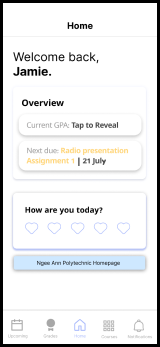
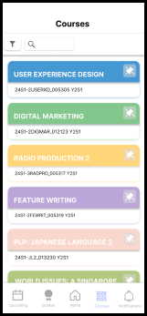
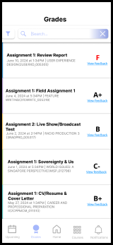
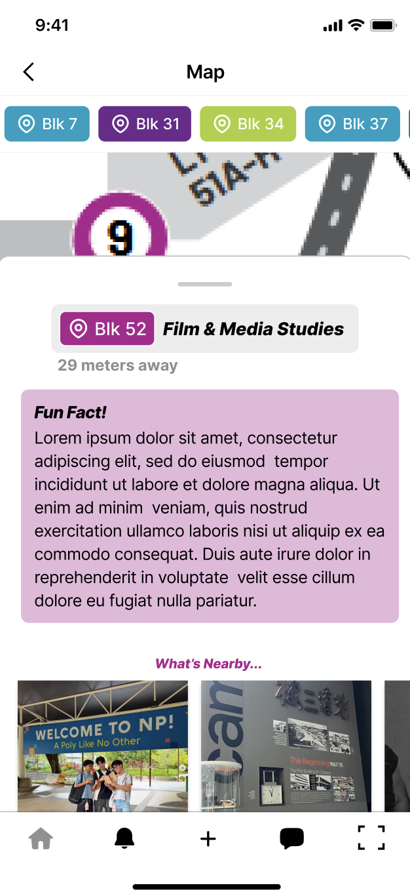
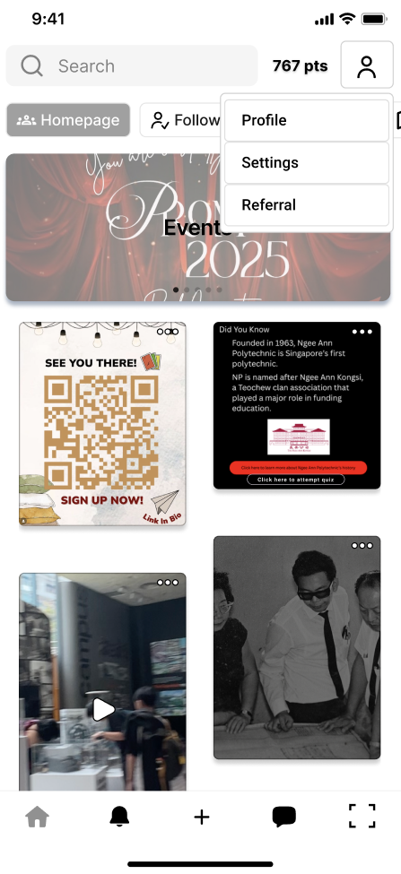
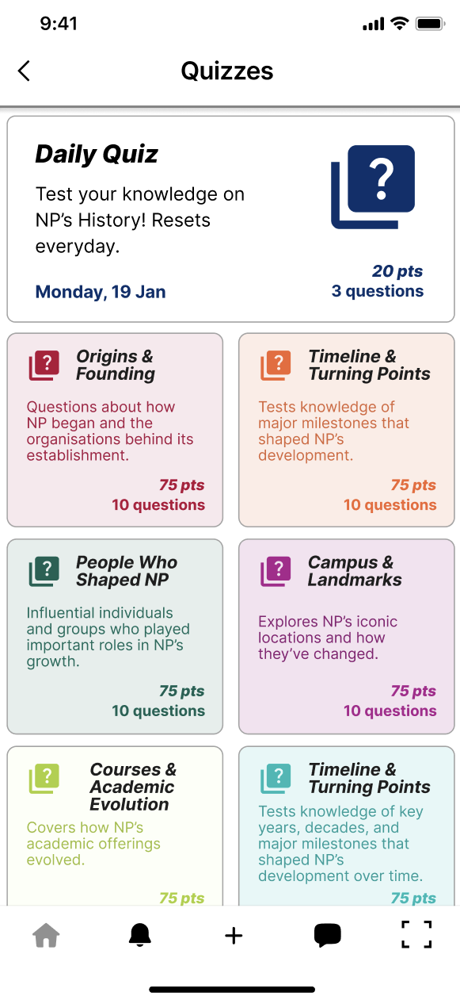
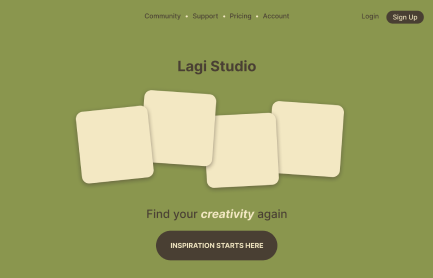
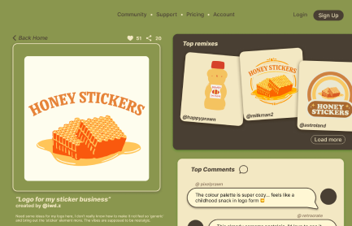
NP Pulse App Redesign
NP-BUZZ: Promoting History
Lagi Studio
UX/UI designs:
IMDA: Gen AI game
RPG Game
This portfolio !
I designed and made this entire portfolio as a challenge to
myself! With everything that I learnt before, I wanted to try
something new.
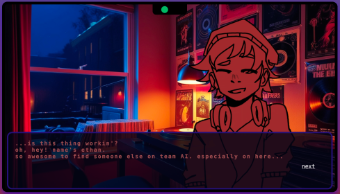
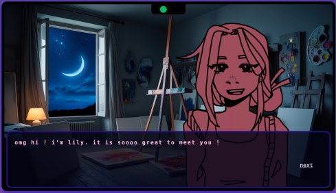
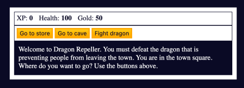
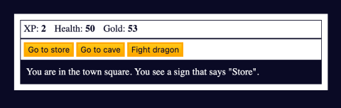
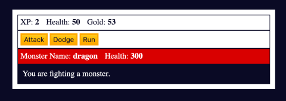
CTV Graphics
For my final year project, I was a part of the Campus TV
station. I was one of the Production Manager, and these are some
motion graphics I did for my semester.
CTV Edited Videos
Additionally, I edited 3 out of 7 videos for my capstone Campus TV
station. Here are snippets of the videos I edited.
Check out the full videos on CTV's YouTube channel below !
Check out the full videos on CTV's YouTube channel below !
Motion graphics/Editing:
2026
Miasara Binte Mohamad Norfitri
motion design . UX/UI design . frontend development
Proficiency in:
Hi, I’m Mia!
I’m a motion and graphic designer with a strong interest in user-centric design and front-end development.
I’m a graduating third-year Mass Communications student at Ngee Ann Polytechnic, where I’ve developed a foundation in HTML/CSS/JS, Figma and After Effects .
I’m particularly interested in interdisciplinary work that bridges design and computer science . Below is a selection of projects that reflect my interests.
I’m a motion and graphic designer with a strong interest in user-centric design and front-end development.
I’m a graduating third-year Mass Communications student at Ngee Ann Polytechnic, where I’ve developed a foundation in HTML/CSS/JS, Figma and After Effects .
I’m particularly interested in interdisciplinary work that bridges design and computer science . Below is a selection of projects that reflect my interests.